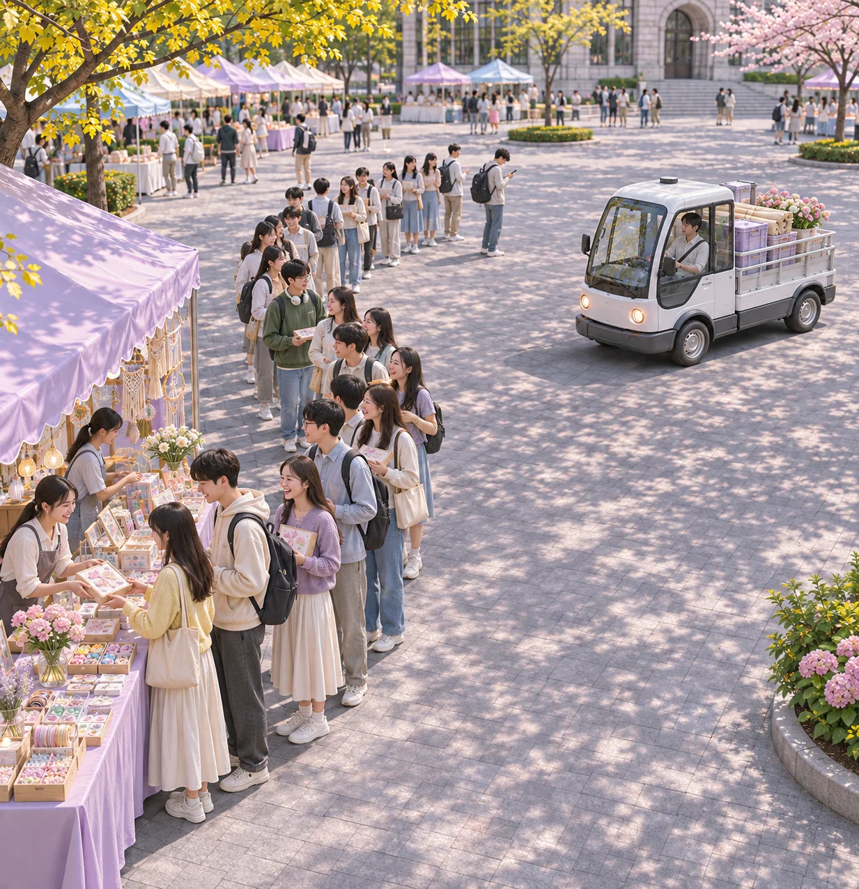
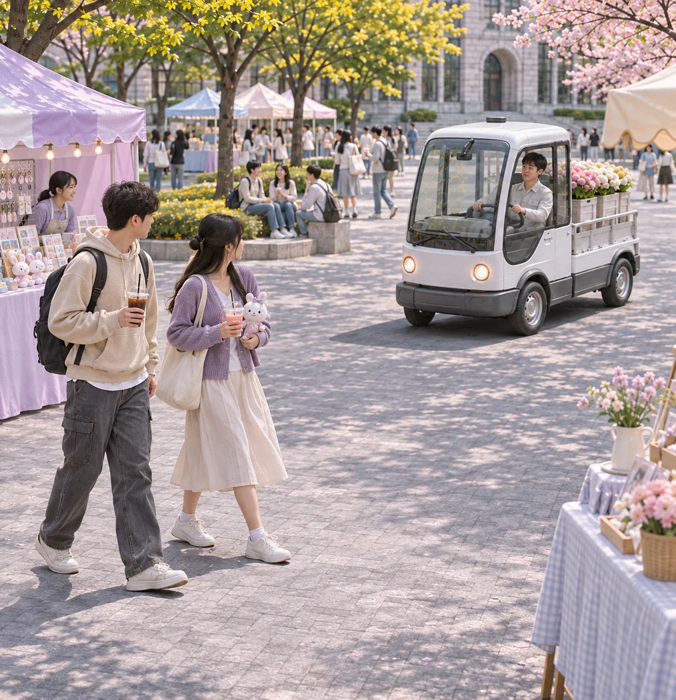
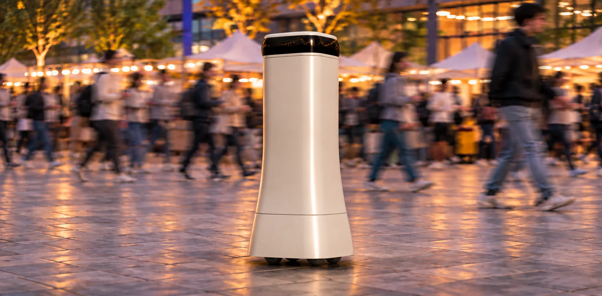
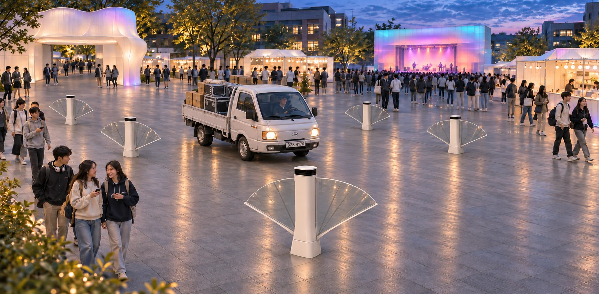
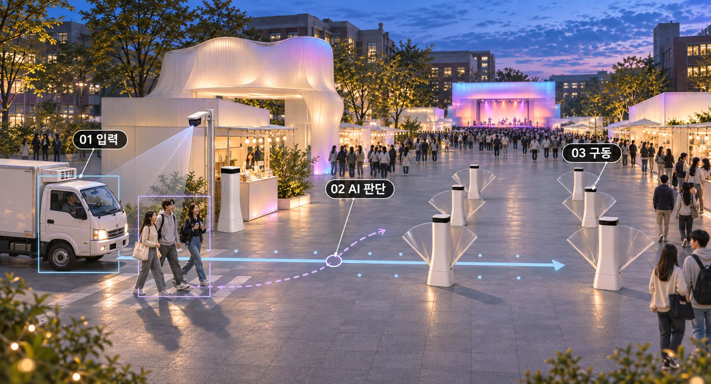
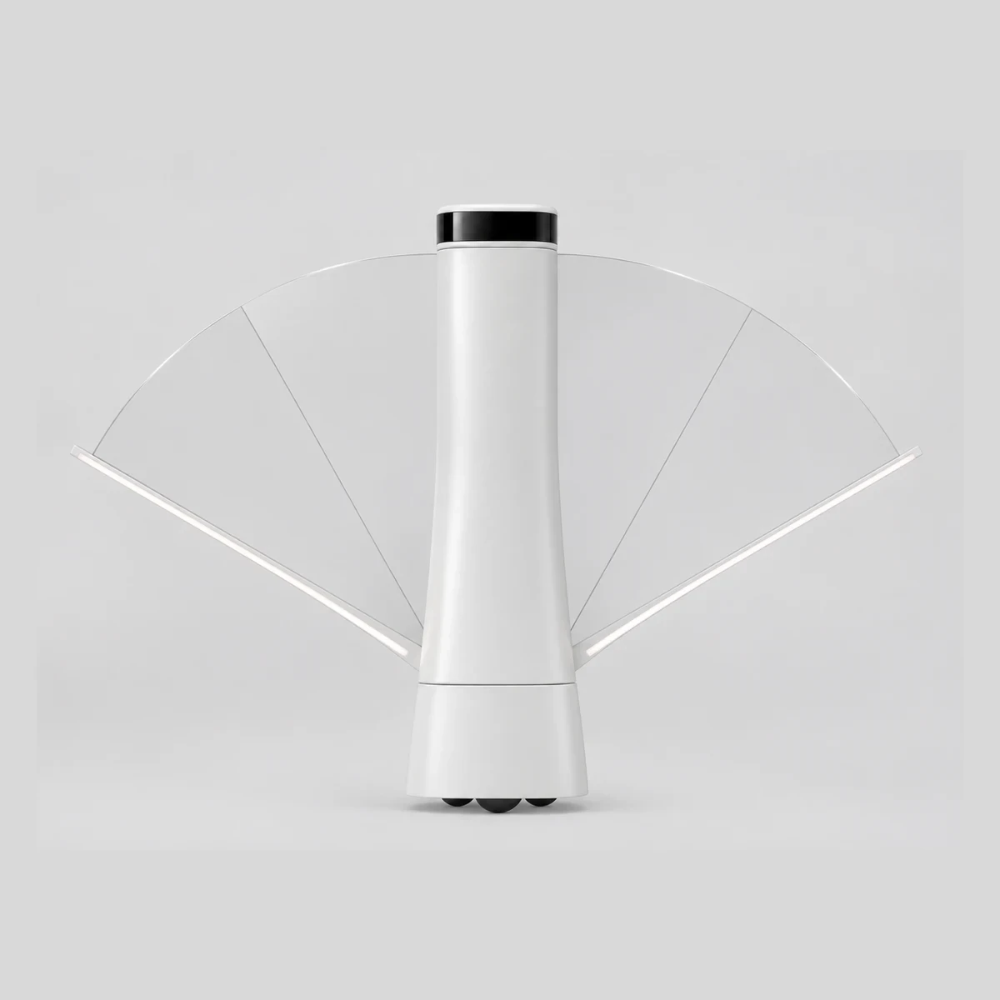
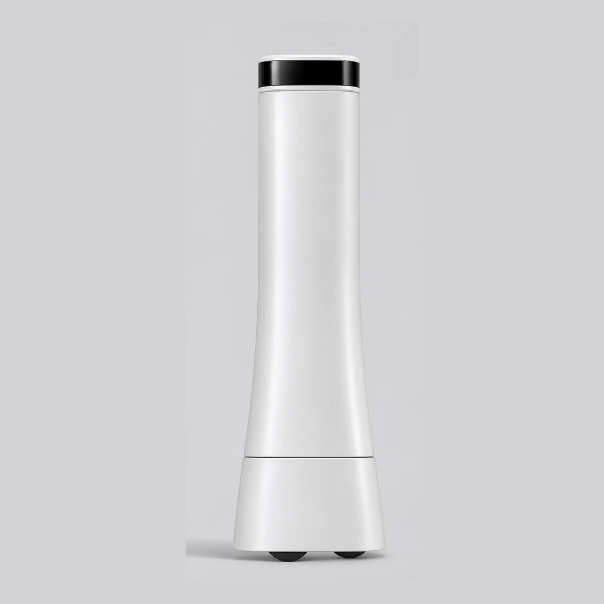
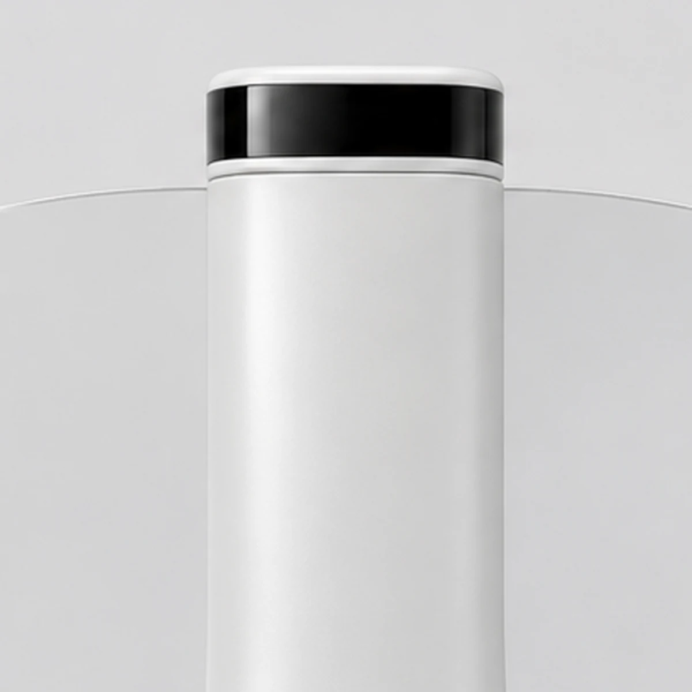
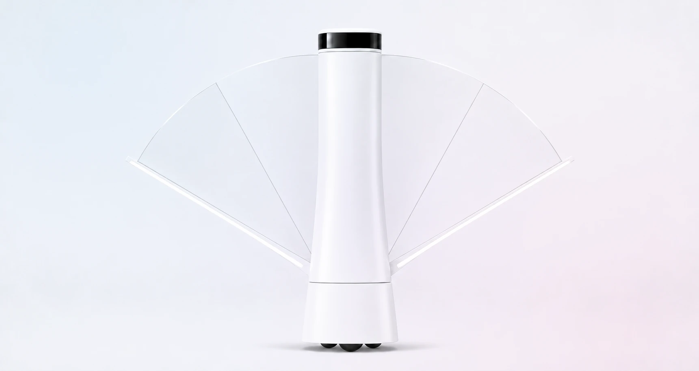

부스 앞에서
부스 앞에 줄을 서면 뒤에서 다가오는 차량을 알아차리기 어렵습니다.
02 · User & Problem
부스 앞에 줄을 설 때도, 광장을 가로지를 때도 학생들은 차량과 길을 나눠 씁니다.

부스 앞에 줄을 서면 뒤에서 다가오는 차량을 알아차리기 어렵습니다.

차량이 어느 쪽으로 지나갈지 몰라 광장을 건너던 학생들이 걸음을 멈춥니다.
03 · Key Features
AI가 차량의 접근을 감지하면 로봇들이 제자리로 이동해 임시 통행로를 만듭니다.

광장의 AI 카메라가 진입 차량을 감지하고 예상 경로를 로봇에 전달합니다.

각 로봇은 가림막을 접은 채 차량이 지나갈 길의 양옆으로 이동합니다.

자리를 잡은 로봇들이 투명 가림막을 펼쳐 차량이 지나는 길과 사람이 걷는 공간을 나눕니다.
04 · How it Works
입력 정보 → AI 판단 → 물리적 반응, 3단계로 작동합니다.

광장의 카메라가 차량과 보행자의 위치와 이동 방향을 감지합니다.
AI가 두 동선이 겹칠 지점을 예측하고 로봇을 배치할 위치를 정합니다.
각 로봇의 MCU가 바퀴와 가림막을 제어합니다. 로봇들은 차량 경로 양옆으로 이동해 투명 가림막을 펼칩니다.
05 · Use Scenario
「사용 전 — 사용자의 상황」
06 · Design
무광 화이트 본체 양옆으로 투명한 가림막이 부채처럼 펼쳐집니다. 가장자리의 은은한 빛이 차량 통로를 따라 경계를 그립니다.




3D 불러오는 중…07 · Specs & Materials
